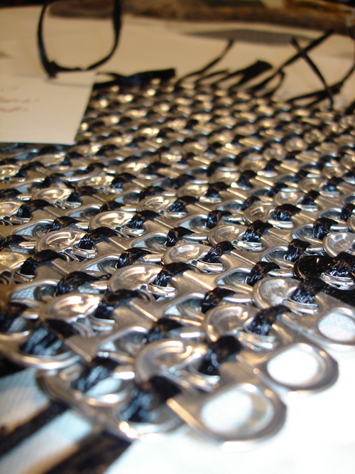
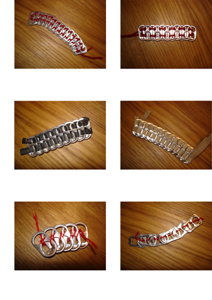
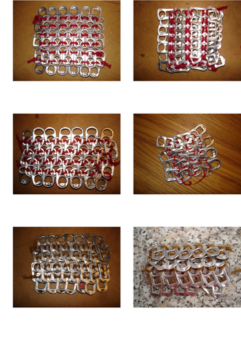
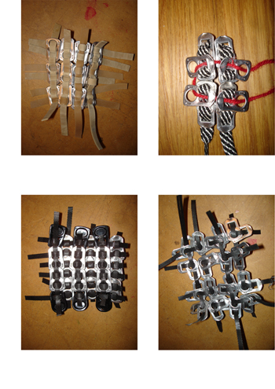
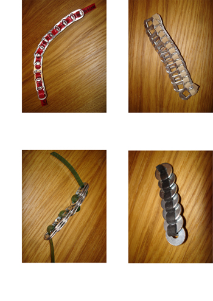

Tab Textile
The assignment was to create a material. The material did not have to have an apparent function.
I had seen purses made of soda can tabs and the material fascinated me. For this assignment I chose to investigate the different possible
systems for weaving the tabs.
I experimented with different threads and different patterns.
This is actually a good material to make in Eindhoven… I spent days roaming the streets to find empty cans. I would steal the tab and felt
I should throw the rest in the bin. The streets had not been as clean in a long time.
   